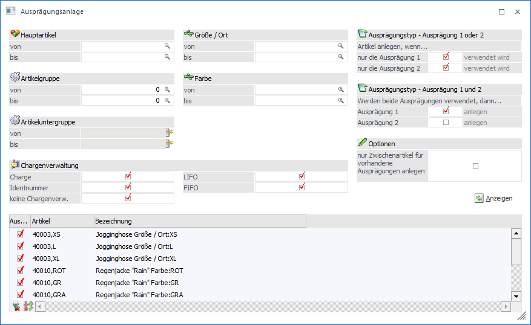
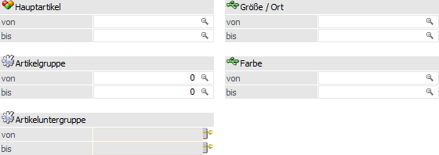
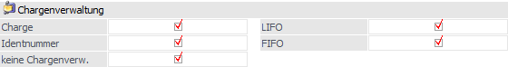
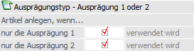
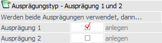
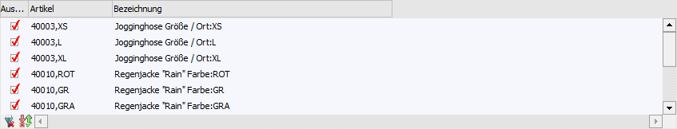

Im Menüpunkt…
1 WinLine FAKT
1 Stammdaten
1 Ausprägungen
1 Ausprägungsanlage
… können Ausprägungsartikel angelegt werden. D.h. wurden Hauptartikel mit einem Ausprägungstyp angelegt, die Ausprägungen selbst aber noch nicht, dann können diese über diesen Menüpunkt nachträglich angelegt werden.
Beispiel
Es wird mit Farbskalen gearbeitet. Wird nun eine neue Farbe in das Sortiment aufgenommen, so muss nicht bei jedem Artikel einzeln die neue Farbe angelegt werden, sondern dieses an dieser Stelle in einen Vorgang automatisch erfolgen.

Folgende Selektionskriterien und Einstellungen stehen zur Verfügung:
Selektion

Ø Hauptartikel
An dieser Stelle kann eine Einschränkung auf die Hauptartikel, für welche die Ausprägungsartikel angelegt werden sollen, erfolgen.
Ø Artikelgruppe
Hier kann über die Artikelgruppe selektiert werden.
Ø Artikeluntergruppe
An dieser Stelle kann mit Hilfe der Artikeluntergruppe eine Einschränkung vorgenommen werden.
Ø Ausprägung 1 / Ausprägung 2 (hier "Größe / Ort" und "Farbe")
An dieser Stelle kann eine Einschränkung auf die Ausprägungen erfolgen, welche angelegt werden sollen.
Chargenverwaltung

Ø Chargenverwaltung
In diesem Bereich kann der Typ der Chargenverwaltung definiert werden, für welche Ausprägungen angelegt werden sollen. Folgende Typen stehen zur Auswahl:
ü Charge
ü Identnummer
ü keine Chargenverwaltung
ü LIFO
ü FIFO
Beispiel
Es gibt einen Artikel mit "Größe" (Ausprägung 1) und "Charge". Um die Ausprägungen der Größe anzulegen müssen die folgenden Optionen aktiviert werden:
ü Artikel anlegen, wenn nur die Ausprägung 1 verwendet wird (Bereich "Ausprägungstyp - Ausprägung 1 oder 2")
ü Charge (Bereich "Chargenverwaltung")
Hinweis
Wenn es sich um einen Artikel mit Ausprägung und Chargen, Ident, LIFO oder FIFO handelt, dann werden zwar die Ausprägungsartikel angelegt, aber ohne Chargeninformation.
Reine Chargen, Ident, LIFO oder FIFO Artikel ohne Ausprägung können dementsprechend nicht über diesen Menüpunkt angelegt werden.
Ausprägungstyp - Ausprägung 1 oder 2

In diesem Bereich kann die Anlage für Artikel definiert werden, welche NUR Ausprägung 1 ODER Ausprägung 2 aktiviert haben (ggfs. + Chargenverwaltung).
Ø Artikel anlegen, wenn nur die Ausprägung 1 verwendet wird
Durch Aktivierung dieser Option werden für Hauptartikel mit einer Ausprägung (hier "Ausprägung 1") die fehlenden Ausprägungen zur Anlage vorgeschlagen.
Beispiel
Im Programm "Ausprägungen verwalten" wurde für Ausprägung 1 die Gruppe "Größe" und für Ausprägung 2 die Gruppe "Farbe" angelegt (jeweils inklusive Ausprägungen). Dem Artikel "4710" wurde die Ausprägungsgruppe "Größe" zugeordnet. Durch Aktivierung dieser Option werden die fehlenden Ausprägungen der "Größe" zur Anlage vorgeschlagen.
Ø Artikel anlegen, wenn nur die Ausprägung 2 verwendet wird
Durch Aktivierung dieser Option werden für Hauptartikel mit einer Ausprägung (hier "Ausprägung 2") die fehlenden Ausprägungen zur Anlage vorgeschlagen.
Beispiel
Im Programm "Ausprägungen verwalten" wurde für Ausprägung 1 die Gruppe "Größe" und für Ausprägung 2 die Gruppe "Farbe" angelegt (jeweils inklusive Ausprägungen). Dem Artikel "4711" wurde die Ausprägungsgruppe "Farbe" zugeordnet. Durch Aktivierung dieser Option werden die fehlenden Ausprägungen der "Farbe" zur Anlage vorgeschlagen.
Ausprägungstyp - Ausprägung 1 und 2

In diesem Bereich kann die Anlage für Artikel definiert werden, welche Ausprägung 1 UND Ausprägung 2 aktiviert haben (ggfs. + Chargenverwaltung).
Ø Werden beide Ausprägungen verwendet, dann Ausprägung 1 anlegen
Durch Aktivierung dieser Option werden für Hauptartikel mit beiden Ausprägungen die fehlenden Ausprägungen der Ausprägung 1 (auch "Zwischenartikel" genannt) zur Anlage vorgeschlagen.
Beispiel
Im Programm "Ausprägungen verwalten" wurde für Ausprägung 1 die Gruppe "Größe" und für Ausprägung 2 die Gruppe "Farbe" angelegt (jeweils inklusive Ausprägungen). Dem Artikel "4712" wurden beide Ausprägungsgruppen zugeordnet. Durch Aktivierung dieser Option werden die fehlenden Ausprägungen der "Größe" zur Anlage vorgeschlagen.
Ø Werden beide Ausprägungen verwendet, dann Ausprägung 2 anlegen
Durch Aktivierung dieser Option werden für Hauptartikel mit beiden Ausprägungen die fehlenden Ausprägungen der Ausprägung 2 zur Anlage vorgeschlagen (d.h. die fehlenden Ausprägungen der Kombination "Ausprägung 1 und Ausprägung 2").
Beispiel
Im Programm "Ausprägungen verwalten" wurde für Ausprägung 1 die Gruppe "Größe" und für Ausprägung 2 die Gruppe "Farbe" angelegt (jeweils inklusive Ausprägungen). Dem Artikel "4713" wurden beide Ausprägungsgruppen zugeordnet. Durch Aktivierung dieser Option werden die fehlenden Kombinationen aus "Größe + Farbe" zur Anlage vorgeschlagen.
Optionen
Ø nur Zwischenartikel für vorhandene Ausprägungen anlegen
Durch Aktivierung dieser Option werden nur jene Zwischenartikel (d.h. Ausprägungen) zur Anlage vorgeschlagen, für welche es bereits Ausprägungen / Chargen / Identnummern in darunter liegenden Ebenen gibt.
Anzeigen

Ø Anzeigen
Nach Drücken des Buttons "Anzeigen" werden alle anzulegenden Ausprägungen, gemäß der zuvor getroffenen Selektion, in der Tabelle "Ausprägungsartikel" angezeigt.
Tabelle "Ausprägungsartikel"

In der Tabelle werden nach Anwahl des Buttons "Anzeigen" alle anzulegenden Ausprägungen vorgeschlagen. Durch Deaktivierung der Häkchen in der Spalte "Auswahl" können einzelne Ausprägungen von der Anlage ausgenommen werden.
Tabellenbuttons

Ø alle Zeilen selektieren
Durch Anwahl des Buttons "alle Zeilen selektieren" werden alle Zeilen selektiert.
Ø Selektion umkehren
Mit Hilfe dieses Buttons werden alle selektierten Zeilen deselektiert und alle nicht selektierten Zeilen selektiert.
Ø Ausgabe Excel
Durch Anwahl des Buttons "Ausgabe Excel" wird der Inhalt der Tabelle an Microsoft Excel übergeben.
Ø Tabelleneinstellungen speichern
Die Spalten einer Tabelle können grundsätzlich an beliebige Positionen verschoben, bzw. in der Breite entsprechend angepasst werden. Durch Anwahl des Buttons "Tabelleneinstellungen speichern" werden die Einstellungen benutzerspezifisch gespeichert und bei dem nächsten Aufruf des Programmpunktes wieder vorgeschlagen.
Ø Gesamteinstellungen speichern
Im Gegensatz zu "Tabelleneinstellungen speichern" können mit "Gesamteinstellungen speichern" mehrere Tabellenaufbauten gespeichert und nach Wunsch geladen werden. Zusätzlich werden Sonderfunktionen der Tabelle (z.B. "Spalte gruppieren") ebenfalls bei der Speicherung bedacht.
Buttons
Ø Ok
Durch Anwahl des Buttons "Ok" bzw. der Taste F5 werden die Ausprägungsartikel, entsprechend der vorgenommenen manuellen Selektion / Auswahl, angelegt.
Ø Ende
Durch Drücken des Buttons "Ende" bzw. der Taste ESC wird das Fenster geschlossen und keine Ausprägungen angelegt.